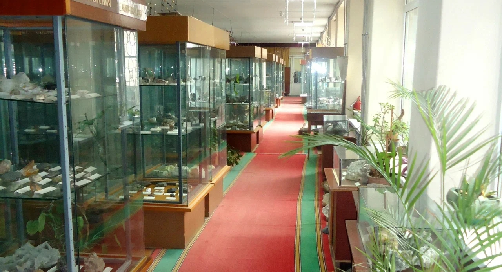

Добро пожаловать в Геологический музей Института Наук о Земле

×

Минералогический музей Института наук о Земле является самым крупным геологическим музеем на Юге России, обладая самыми полными и масштабными коллекциями образцов минералов и горных пород.
Минералогический музей является структурным подразделением Института наук о Земле Южного федерального университета. Это крупнейшее на Юге России собрание образцов минералов, горных пород и фоссилий – более 11500.
Музей внесен в реестр минералогических коллекций в России (2005г) и является членом Ассоциации естественно-исторических музеев РФ Российского комитета Международного Совета музеев (2001).